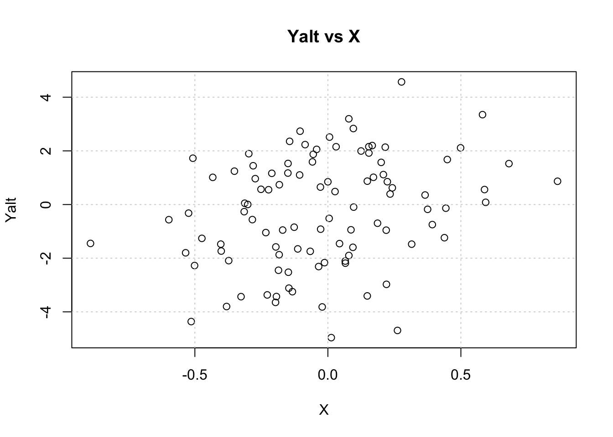
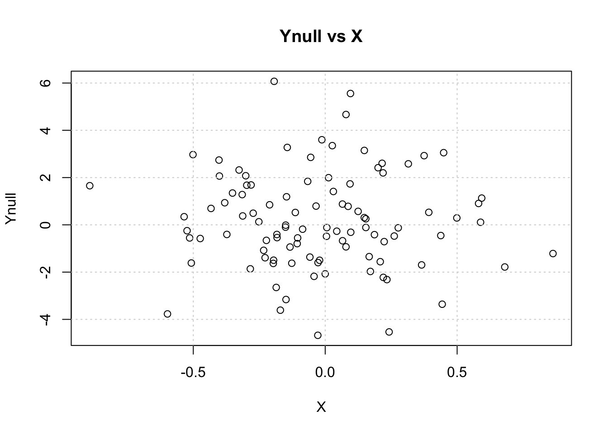
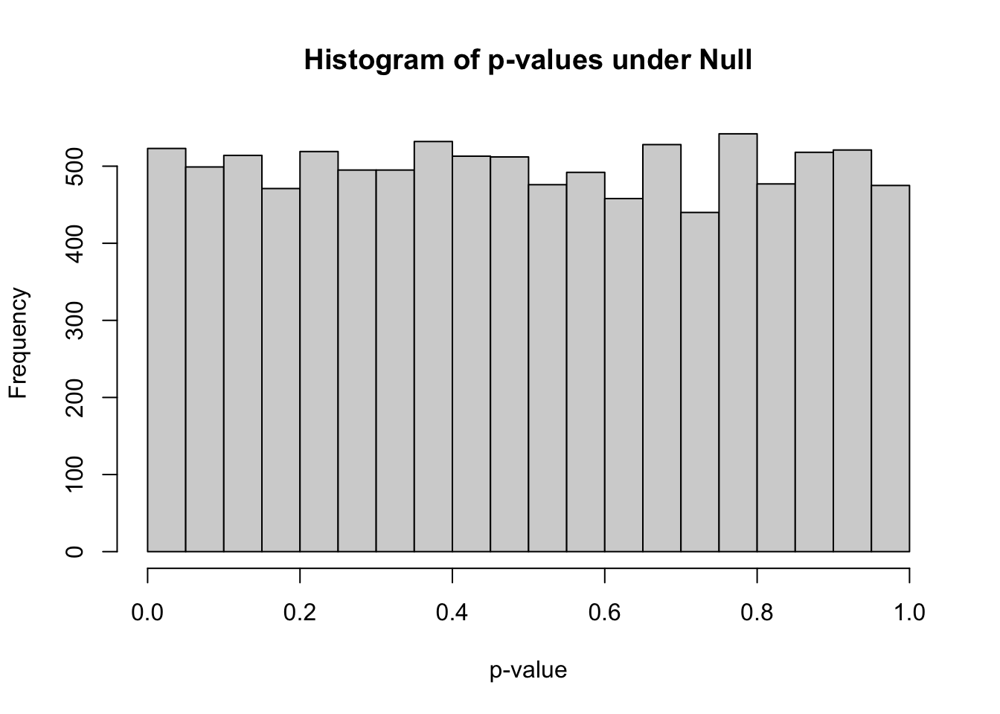
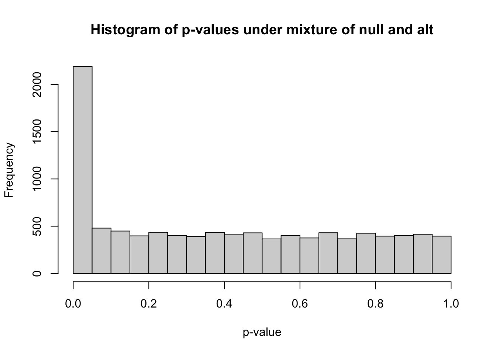
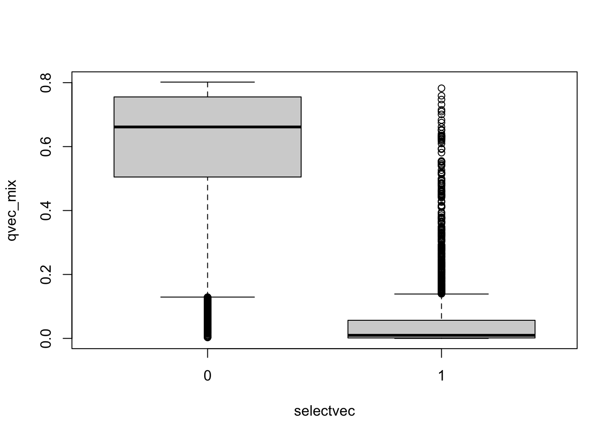
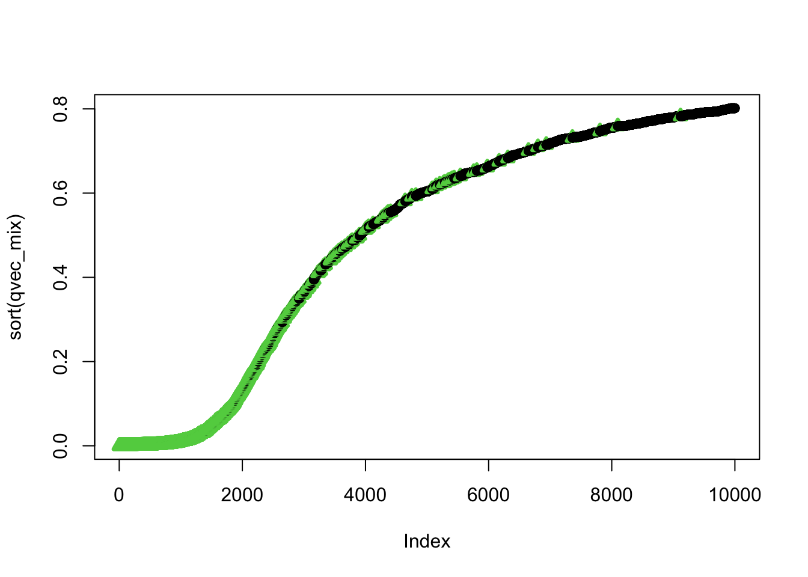
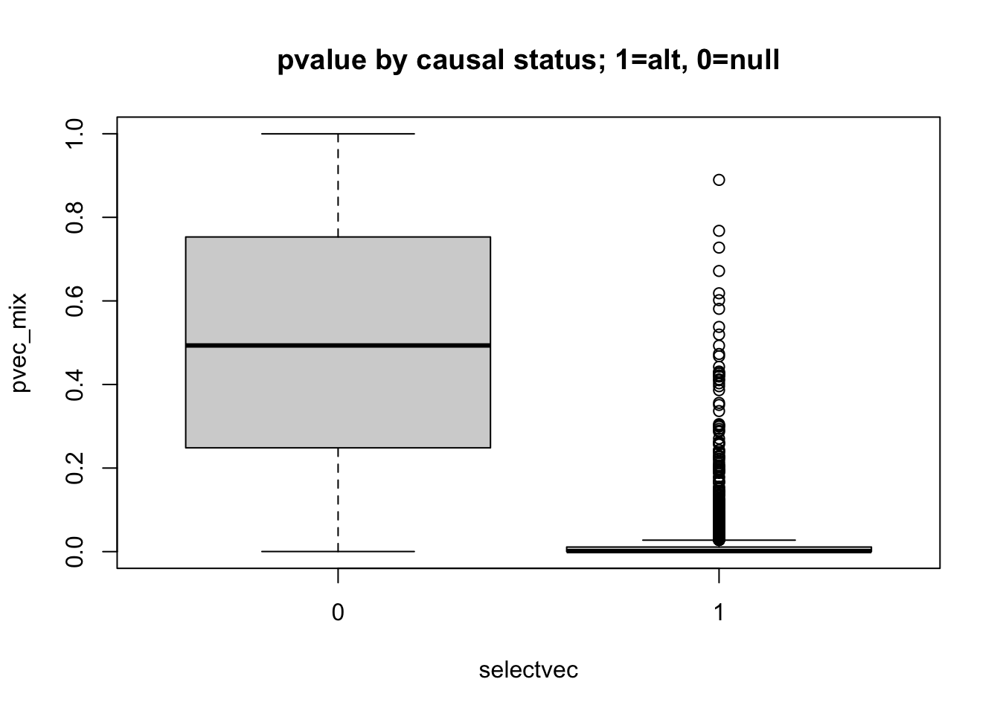
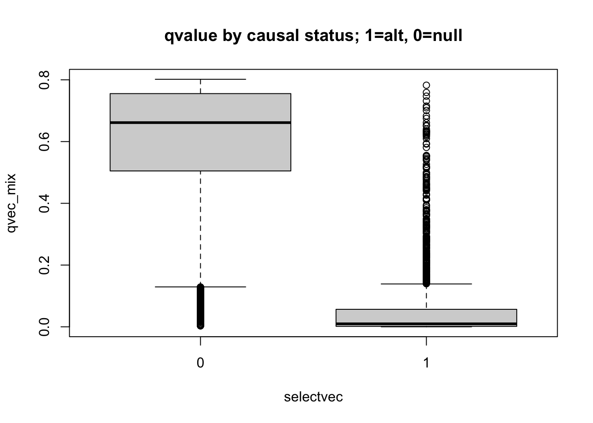
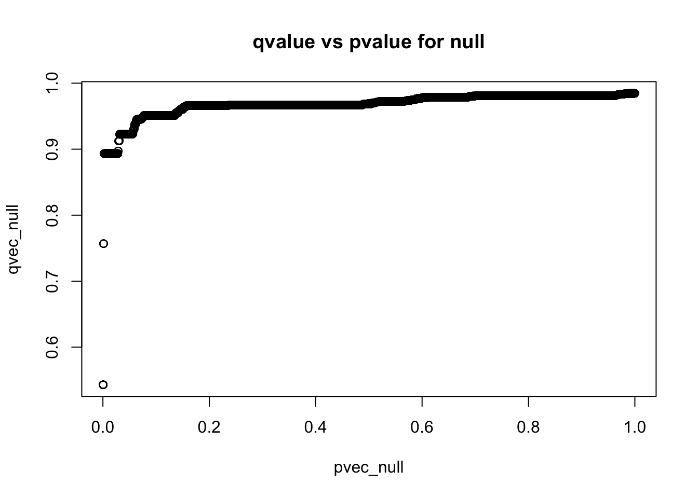
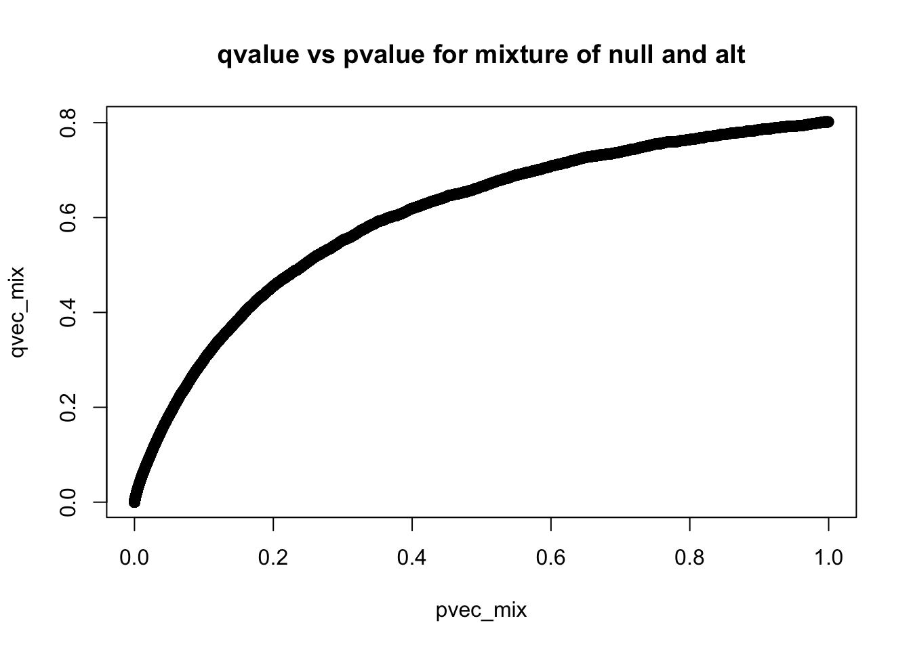

## set seed to make simulations reproducible
## set.seed(20210108)
## let's start with some parameter definitions
nsamp = 100
beta = 2
h2 = 0.1
sig2X = h2
sig2epsi = (1 - sig2X) * beta^2
sigX = sqrt(sig2X)
sigepsi = sqrt(sig2epsi)Learning objectives
- build intuition about p-values when multiple testing is performed via simulations
- recognize the need for multiple testing correction
- present methods to correct for multiple testing
- Bonferroni correction
- FDR (false discovery rate)
Why do we need multiple testing correction

What do p-values look like under the null and alternative?
Simulate vectors X, Yalt=\(X\cdot \beta + \epsilon\) and Ynull independent of X
We start defining some parameters for the simulations. The need for these will become obvious later.
Next, we simulate a vectors X and \(\epsilon\), and Ynull, all normally distributed
X = rnorm(nsamp,mean=0, sd= sigX)
epsi = rnorm(nsamp,mean=0, sd=sigepsi)
## generate Ynull (X has no effect on Ynull)
Ynull = rnorm(nsamp, mean=0, sd=beta)Calculate Yalt = X * beta + epsi
Yalt = X * beta + epsiVisualize Yalt vs X
plot(X, Yalt, main="Yalt vs X"); grid()
Visualize Ynull vs X
plot(X, Ynull, main="Ynull vs X");grid()
Test association between Ynull and X
summary(lm(Ynull ~ X))
Call:
lm(formula = Ynull ~ X)
Residuals:
Min 1Q Median 3Q Max
-4.8431 -1.3431 -0.2234 1.2499 5.8569
Coefficients:
Estimate Std. Error t value Pr(>|t|)
(Intercept) 0.1614 0.2046 0.789 0.432
X -0.2765 0.6653 -0.416 0.679
Residual standard error: 2.039 on 98 degrees of freedom
Multiple R-squared: 0.00176, Adjusted R-squared: -0.008426
F-statistic: 0.1728 on 1 and 98 DF, p-value: 0.6786what’s the p-value of the association?
is the p-value significant at 5% significance leve?
Next, test the association between Yalt and X
summary(lm(Yalt ~ X))
Call:
lm(formula = Yalt ~ X)
Residuals:
Min 1Q Median 3Q Max
-4.9610 -1.3250 0.0524 1.6622 4.2743
Coefficients:
Estimate Std. Error t value Pr(>|t|)
(Intercept) -0.2102 0.1976 -1.064 0.29004
X 1.8297 0.6424 2.848 0.00536 **
---
Signif. codes: 0 '***' 0.001 '**' 0.01 '*' 0.05 '.' 0.1 ' ' 1
Residual standard error: 1.969 on 98 degrees of freedom
Multiple R-squared: 0.07645, Adjusted R-squared: 0.06703
F-statistic: 8.113 on 1 and 98 DF, p-value: 0.005357what’s the p-value of the association?
is the p-value significant at 5% significance level?
Calculate the empirical distribution of p-values
To calculate the empirical distribution of p-values under the null and alternatives we will simulate X, Yalt, Ynull for 10,000 times.
Define a convenience function fastlm, will do linear regression much faster
We want to run 10,000 times this same regression, so here we define a function fastlm that will get us the p-values and regression coefficients.
fastlm = function(xx,yy)
{
## compute betahat (regression coef) and pvalue with Ftest
## for now it does not take covariates
df1 = 2
df0 = 1
ind = !is.na(xx) & !is.na(yy)
xx = xx[ind]
yy = yy[ind]
n = sum(ind)
xbar = mean(xx)
ybar = mean(yy)
xx = xx - xbar
yy = yy - ybar
SXX = sum( xx^2 )
SYY = sum( yy^2 )
SXY = sum( xx * yy )
betahat = SXY / SXX
RSS1 = sum( ( yy - xx * betahat )^2 )
RSS0 = SYY
fstat = ( ( RSS0 - RSS1 ) / ( df1 - df0 ) ) / ( RSS1 / ( n - df1 ) )
pval = 1 - pf(fstat, df1 = ( df1 - df0 ), df2 = ( n - df1 ))
res = list(betahat = betahat, pval = pval)
return(res)
}Simulate vectors X, Ynull, Yalt 10,000 times
nsim = 10000
## simulate normally distributed X and epsi
Xmat = matrix(rnorm(nsim * nsamp,mean=0, sd= sigX), nsamp, nsim)
epsimat = matrix(rnorm(nsim * nsamp,mean=0, sd=sigepsi), nsamp, nsim)
## generate Yalt (X has an effect on Yalt)
Ymat_alt = Xmat * beta + epsimat
## generate Ynull (X has no effect on Ynull)
Ymat_null = matrix(rnorm(nsim * nsamp, mean=0, sd=beta), nsamp, nsim)
## let's look at the dimensions of the simulated matrices
dim(Ymat_null)[1] 100 10000dim(Ymat_alt)[1] 100 10000Now we have 10000 independent simulations of X, Ynull, and Yalt
## give them names so that we can refer to them later more easily
colnames(Ymat_null) = paste0("c",1:ncol(Ymat_null))
colnames(Ymat_alt) = colnames(Ymat_null)To calculate p-values under the null run 10,000 linear regressions using X and Ynull
pvec_null = rep(NA,nsim)
bvec_null = rep(NA,nsim)
for(ss in 1:nsim)
{
fit = fastlm(Xmat[,ss], Ymat_null[,ss])
pvec_null[ss] = fit$pval
bvec_null[ss] = fit$betahat
}
summary(pvec_null) Min. 1st Qu. Median Mean 3rd Qu. Max.
0.0002453 0.2469528 0.4923302 0.4975967 0.7537629 0.9999578 hist(pvec_null,xlab="p-value",main="Histogram of p-values under Null")
- how many simulations under the null yield p-value below 0.05? What percentage is that?
sum(pvec_null<0.05)[1] 523mean(pvec_null<0.05)[1] 0.0523how many simulations under the null yield p-value < 0.20?
what do you think the proportion of simulations with p-values < \(\alpha\) (\(\alpha\) between 0 and 1) will be roughly?
Why do we need to use more stringent significance level when we test many times?
Bonferroni correction
Use as the new threshold the original one divided by the number of tests. So typically
\[\frac{0.05}{\text{total number of tests}}\]
what’s the Bonferroni threshold for significance in this simulation?
how many did we find?
BF_thres = 0.05/nsim
## Bonferroni significance threshold
print(BF_thres) [1] 5e-06## number of Bonferroni significant associations
sum(pvec_null<BF_thres)[1] 0## proportion of Bonferroni significant associations
mean(pvec_null<BF_thres)[1] 0Mix of Ynull and Yalt
Let’s see what happens when we add a bunch of true associations in the matrix of null associations
prop_alt=0.20 ## define proportion of alternative Ys in the mixture
selectvec = rbinom(nsim,1,prop_alt)
names(selectvec) = colnames(Ymat_alt)
selectvec[1:10] c1 c2 c3 c4 c5 c6 c7 c8 c9 c10
0 0 0 0 0 0 0 0 0 0 Ymat_mix = sweep(Ymat_alt,2,selectvec,FUN='*') + sweep(Ymat_null,2,1-selectvec,FUN='*')Run linear regression for all 10,000 phenotypes in the mix of true and false associations, Ymat_mix
pvec_mix = rep(NA,nsim)
bvec_mix = rep(NA,nsim)
for(ss in 1:nsim)
{
fit = fastlm(Xmat[,ss], Ymat_mix[,ss])
pvec_mix[ss] = fit$pval
bvec_mix[ss] = fit$betahat
}
summary(pvec_mix) Min. 1st Qu. Median Mean 3rd Qu. Max.
0.00000 0.08125 0.37643 0.40485 0.68693 0.99988 hist(pvec_mix,xlab="p-value",main="Histogram of p-values under mixture of null and alt")
m_signif = sum(pvec_mix < 0.05) ## observed number of significant associations
m_expected = 0.05*nsim ## expected number of significant associations under the worst case scenario, where all features belong to the null
m_signif[1] 2191m_expected[1] 500Under the null, we were expecting 500 significant columns by chance but got 2191
Q: how can we estimate the proportion of true positives?
We got 1691 extra columns, so it’s reasonable to expect that the extra significant results come from the alternative distribution (Yalt). So \[\frac{\text{observed number of significant} - \text{expected number of significant}}{\text{observed number of significant}}\] should be a good estimate of the true discovery rate. False discovery rate is defined as 1 - the true discovery rate.
thres = 0.05
FDR = sum((pvec_mix<thres & selectvec==0)) / sum(pvec_mix<thres)
## proportion of null columns that are significant among all significant
FDR[1] 0.1866728If we use a p-value threshold of 0.05, 81.33 percent of the signficant columns are true discoveries. In this case, we know which ones are true or false associations because we decided using the selectvec vectors which simulated Y would be a function of X or unrelated to X.
what’s the proportion of false discoveries if we use a significance level of 0.01
what’s the proportion of false discoveries if we use Bonferroni correction as the significance level?
What’s the proportion of missed signals, proportion of true associations that have p-values greater than the Bonferroni threshold?
Common approaches to control type I errors
Assuming we are testing \(m\) hypothesis, let’s define the following terms for the different errors.
| Called Significant | Called not significant | Total | |
|---|---|---|---|
| Null true | \(F\) | \(m_0 - F\) | \(m_0\) |
| Alt true | \(T\) | \(m_1 - T\) | \(m_1\) |
| Total | \(S\) | \(m - S\) | \(m\) |
- Bonferroni correction assures that the FWER (Familywise error rate) \(P(F \ge 1)\) is below the acceptable type I error, typically 0.05. \[P(F \ge 1) < \alpha. \] We achieve that by requiring that for each test \[p<\alpha/\text{# tests}.\] This can be too stringent and lead to miss real signals.
- pFDR (positive false discovery rate) \[E\left(\frac{F}{S} \rvert S>0\right)\]
- qvalue is the minimum false discovery rate attainable when the feature (SNP) is called significant
Table of null or alternative vs. significant or not significant
count_table = t(table(pvec_mix>0.05, selectvec))
colnames(count_table) = c("Called significant", "Called not significant")
rownames(count_table) = c("Null true", "Alt true")
knitr::kable(count_table)| Called significant | Called not significant | |
|---|---|---|
| Null true | 409 | 7611 |
| Alt true | 1782 | 198 |
Let’s calculate the qvalue
Use qvalue package to calculate FDR and
Let’s check whether small qvalues correspond to true associations (i.e. the phenotype was generated under the alternative distribution)
## install qvalue if not available.
if(F) ## I set it to F now because I already installed the qvalue package
{if (!require("BiocManager", quietly = TRUE))
install.packages("BiocManager")
BiocManager::install("qvalue")
}
## calculate qvalue using the qvalue function, which returns a list of values, we select the qvalue vector, which assigns the false discovery rate if the threshold for significance was the p-value of the same simulation vector
qres_mix = qvalue::qvalue(pvec_mix)
qvec_mix = qres_mix$qvalue
qres_null = qvalue::qvalue(pvec_null)
qvec_null = qres_null$qvalue
boxplot(qvec_mix~selectvec)
##plot(qvec_mix,col=selectvec*2 + 1, pch=selectvec + 1, lwd=selectvec*2 + 1)
## using selectvec*2 + 1 as a quick way to get the vector to be 1 and 3 (1 is black 3 is green) instead of 1 and 2 (2 is read and can be difficult to read for color blind people)Plot sorted qvalues and color by the selectvec status (true association status)
ind=order(qvec_mix,decreasing=FALSE)
plot(sort(qvec_mix),col=selectvec[ind]*2 + 1, pch=selectvec[ind] + 1, lwd=selectvec[ind]*2 + 1) 
summary(qvec_mix) Min. 1st Qu. Median Mean 3rd Qu. Max.
0.0000001 0.2605298 0.6035350 0.4948872 0.7344018 0.8018152 - do small qvalues tend to be true?
- interpret the figure
## distribution of qvalues and pvalues by causal status
boxplot(pvec_mix ~ selectvec, main='pvalue by causal status; 1=alt, 0=null')
boxplot(qvec_mix ~ selectvec, main='qvalue by causal status; 1=alt, 0=null')
- interpret these figures
How do qvalues and pvalues relate to each other?
plot(pvec_null,qvec_null,main='qvalue vs pvalue for null')
plot(pvec_mix,qvec_mix,main='qvalue vs pvalue for mixture of null and alt')
q-values are monotonic functions of p-values
- what’s the smallest qvalue when all simulations are from the null?
- what’s the smallest qvalue when all simulations are from the mixture?
pi0 and pi1
pi0 is the proportion of null hypothesis which can be estimated using the qvalue package 1 - pi1 is the proportion of true positive associations. This is a useful parameter as we will see in later classes.
qres_null$pi0[1] 0.9846734qres_mix$pi0[1] 0.8019101- how many true positive proportion did you expect given the simulations we performed?
References
Storey, John D., and Robert Tibshirani. 2003. “Statistical Significance for Genomewide Studies.” Proceedings of the National Academy of Sciences 100 (16): 9440–45.